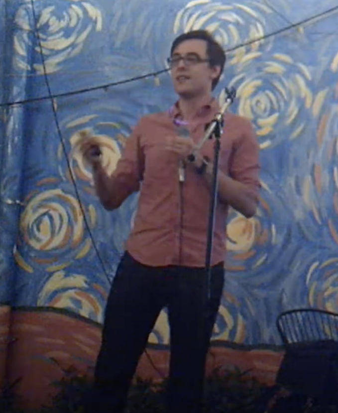
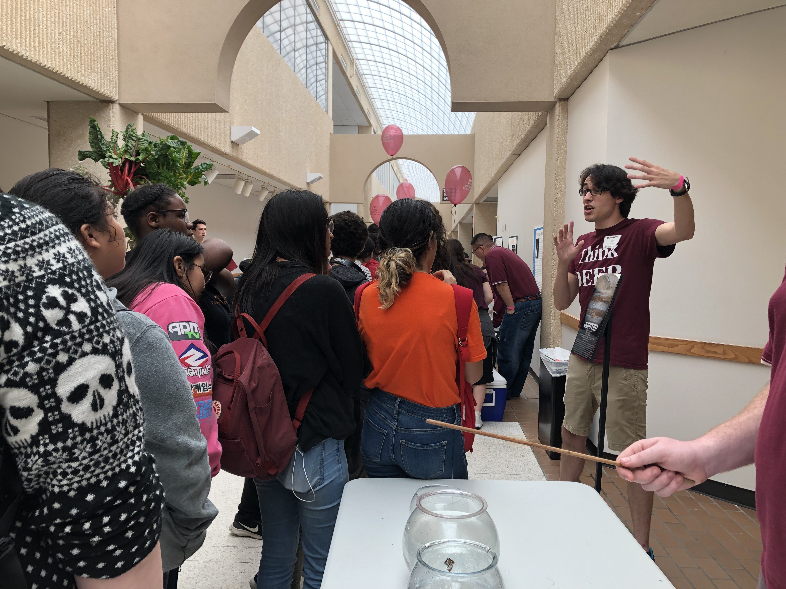

About Me
I'm a fifth-year astronomy PhD student at Texas A&M University working with Dr. Jonelle Walsh. My research involves dynamical modeling of cold gas disks to estimate the masses of supermassive black holes. I completed my Master of Science degree in Astronomy at Texas A&M University in 2019 with Dr. Kim-Vy Tran. I received a B.S. in Physics from the University of Texas at Dallas in 2016, working with Dr. Lindsay King and Dr. Michael Kesden.
I am a classically-trained violinist; I trained in the Suzuki method from ages 3-15. My repertoire includes traditional Celtic, American fiddle, and some pop music in addition to classical. I was also a competitive figure skater from ages 6-17. I am a U.S. Figure Skating Gold Medalist in Ice Dancing and Moves in the Field and I competed at the Novice level in ice dancing.
Outside of astronomy, I enjoy reading, creative writing, music, exercise, tabletop games and RPGs, and travel.
Research
Supermassive black holes in compact elliptical galaxies
Compact elliptical galaxies (CEGs) are nearby (<100 Mpc away) quiescent galaxies that resemble typical quiescent galaxies at redshifts z~2. Most of the massive elliptical galaxies in the nearby Universe evolved from mergers of such z~2 quiescent galaxies. However, local CEGs appear to be relic galaxies that did not undergo any major merger activity since z~2, providing no new gas inflows to feed their supermassive black holes (SMBHs). Therefore, measuring the masses of their SMBHs provides a unique window into the typical masses of SMBHs at z~2.
I create a dynamical model from ALMA observations of CO(2-1) emission in the circumnuclear cold gas disks of the CEGs and explore the parameter space using nested sampling, a Bayesian algorithm. With these models, I constrain the galaxies' SMBH masses, as well as other parameters, including the disk inclination, the systemic velocity, and the mass-to-light ratio.
Teaching
I was the instructor on record for ASTR 102: Observational Astronomy at Texas A&M Unviersity. For this course, I created lectures on basic astronomy and presented them to undergraduate students. I also taught students how to use 8-inch telescopes and created and taught outdoor lab activities with the telescopes.
I also worked as a TA for ASTR 101: Basic Astronomy.
Publications
First Author
Cohn, Leja, Tran et al. 2018, ApJ 869, 141, ZFOURGE: Extreme 5007 Å emission may be a common early-lifetime phase for star-forming galaxies at z > 2.5
Contributing Author
Tran, Forest, Alcorn et al. 2020, ApJ 898, 45, MOSEL: Strong [OIII] 5007 Å Emitting Galaxies at (3 < z < 4) from the ZFOURGE Survey
Yuan, Elagali, Labbé et al. 2020, Nature Astronomy, doi:10.1038/s41550-020-1102-7, A giant galaxy in the young Universe with a massive ring
Gupta, Tran, Cohn et al. 2020, ApJ 893, 23, MOSEL Survey: Tracking the Growth of Massive Galaxies at 2<z<4 using Kinematics and the IllustrisTNG Simulation
Alcorn, Gupta, Tran et al. 2019, ApJ 883, 153, A Tale of Two Clusters: An Analysis of Gas-phase Metallicity and Nebular Gas Conditions in Proto-cluster Galaxies at z ~ 2
Forrest, Tran, Broussard et al. 2018, ApJ, 863, 131, ZFOURGE: Using Composite Spectral Energy Distributions to Characterize Galaxy Populations at 1 < z < 4
Eilbott, Riley, Cohn et al. 2017, MNRAS Letters, 467 Detecting binarity of GW150914-like lenses in gravitational microlensing events
Mentorship & Outreach
I am involved with several scientific outreach programs! Check a few of them out below:
Astronomy on Tap B/CS
Astronomy on Tap B/CS is a chapter of Astronomy on Tap (AoT), located in Bryan, Texas. AoT is a series of free, public science presentations hosted by astronomers, typically at bars. The astronomy graduate students at Texas A&M founded the chapter in Spring 2018, and we have held monthly events ever since! I am one of the co-founders, and I am also an organizer, frequent host and panelist, and an occasional speaker at our events. Usually, we hold our events at the Grand Stafford Theater in Bryan. During the COVID-19 pandemic, we started livestreaming our events on youtube.
You can watch our past events and subscribe to our youtube channel! One of my talks, where I discuss space exploration — including both the science and the ethics — is available here! You can also follow us on Facebook, Twitter, and Instagram for up-to-date news on upcoming events!
Discover, Explore and Enjoy Physics and Engineering
Discover, Explore and Enjoy Physics and Engineering (DEEP) is an outreach, mentorship, and demonstration-building organization at Texas A&M. Graduate students in DEEP work as mentors to small groups of undergraduate students, helping those students build astronomy, physics, and engineering demonstrations to show the public. These demonstrations are often used in undergraduate courses. DEEP graduate and undergraduate students also display their demos in regular outreach events hosted on campus and in the Bryan/College Station community throughout the year. Additionally, DEEP mentors and students help host the annual Physics & Engineering Festival every April, during which thousands of people from across the United States visit Texas A&M to see hundreds of demos.
Letters to a Pre-Scientist
Letters to a Pre-Scientist is a volunteer organization consisting of current scientists at all career levels who serve as pen pals to students in the 5th to 10th grade. The students are paired with their scientist pen pal based on interests. During the ensuing school year, the pen pals each write 4 letters to each other. The goals of the program include de-mystifying Science, Technology, Engineering, and Mathematics (STEM) careers, helping students realize that scientists are normal people like themselves, and inspiring students to consider careers in STEM. The program specifically reaches out to low-income communities with the goal of helping open doors into STEM for historically-excluded students.
Mentoring and Advising Graduates in an Inclusive Community
Alongside Taylor Hutchison, I founded Mentoring and Advising Graduates in an Inclusive Community (MAGIC). We match first-year graduate students with graduate student mentors to provide a support network and promote success in graduate school. We aim to build a supportive, inclusive, non-judgmental, and compassionate community for graduate students at Texas A&M. I co-created and organized the program, and I serve as a primary mentor.
Star Parties
Mitchell Institute Star Parties are hosted twice per month in Bryan/College Station. These star parties are hosted by Texas A&M astronomers, and they are open to the public. However, these star parties are currently on hiatus due to the COVID-19 pandemic.
Contact
Email: joncohn@tamu.edu